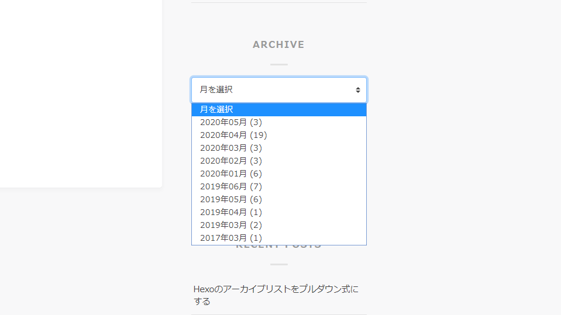

Hexoの月別アーカイブをプルダウン式(select要素)にする
Hexoでプルダウン式の月別アーカイブをサイドバーに置く方法。
Hexoでサイドバーに月別アーカイブを設置する際は、あらかじめ用意されているHelperを使うのが簡単です。
<%- list_archives() %>簡単なのですが、これには問題がありまして、プルダウン式に対応していません。
アーカイブが増えれば増えるほど、サイドバーはどんどん下に長くなってしまうので、プルダウン式で選べるようにしたいところ。なので、無理矢理実装してみよう、というのがこの記事の趣旨です。
イメージ画像

このブログのサイドバーに設置してあるものです。(2020年5月時点)
（追記：画像では「月を選択」の文字が選べるようになっていますが、選べないように変更しました）
実装方法
テンプレートエンジンはEJSです。
<%
let arr = [];
site.posts.each(function(post){
arr.push(post.date.format('YYYY年MM月'))
})
var listMonth = arr
.sort().reverse()
.filter(function(val, i, self){
return i === self.indexOf(val);
});
let archives = [];
for(let i=0; i<listMonth.length; i++){
archives[i] = {
name: `${listMonth[i]} (${countPost(listMonth[i])})`,
path: path(listMonth[i])
}
}
function countPost(month){
return arr.filter(function(x){return x=== month}).length;
}
function path(month){
return url_for(`${config.archive_dir}/${month.slice(0,4)}/${month.slice(5,7)}/`);
}
%>
<h4 class="<%= block %>__title">ARCHIVE</h4>
<select class="archive-list" onchange="location.href=this.value;">
<option
disabled
<%if(!is_month()){%>selected<%}%>>
月を選択
</option>
<% for(let i=0; i<archives.length; i++){ %>
<option
value="<%= archives[i].path %>"
<% if(is_current(archives[i].path)){%>selected<%}%>>
<%= archives[i].name %>
</option>
<%}%>
</select>select要素の本体部分のみなので、サイドバーのタイトルなどはデザインに合わせて調整してください。
月別ページではselected属性を用いて、そのページに対応する月が最初から選ばれた状態になります。
また、7行目の.reverse()を取り除くと昇順になります。
_config.ymlから archive_generatorの設定でmonthlyをtrueにするのをお忘れなく。（どうやらmonthlyをtrueにするにはyearlyをtrueにするのが必須のようです…）
archive_generator:
per_page: 0
yearly: true
monthly: true
daily: false
order_by: -dateやっていること
カテゴリーリストのように、月別のリストが収められている変数が無かったので、site.posts.dataから全ての記事の日付を取り出し、moment.jsで年と月だけの形に加工し、ダブっているものをカウントしてその数を連想配列におさめ、降順に並べ替え、ループでoptionタグに出す…みたいな泥臭いことをやっています。
月別ページの場合は、もともとHexoに用意されている変数page.year page.monthらと比較し、同じならselected属性を付けます。
もっと賢い方法があるかも…